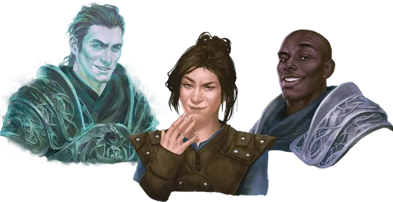

Карадок
Caradoc
Средняя Нежить, нейтрально-злая, именной НИП

Класс Доспеха 14
Хиты 110 (20к8 + 20)
Скорость 0 футов, летая 40 футов (парит)
| мод | спас | ||
|---|---|---|---|
| СИЛ | 1 | −5 | −5 |
| ЛОВ | 18 | +4 | +4 |
| ТЕЛ | 12 | +1 | +1 |
| мод | спас | ||
|---|---|---|---|
| ИНТ | 15 | +2 | +5 |
| МДР | 13 | +1 | +4 |
| ХАР | 19 | +4 | +4 |
Навыки Восприятие +4, Обман +7, Проницательность +4
Сопротивление урону звук, кислота, огонь, электричество; немагический дробящий, колющий, рубящий
Иммунитет к урону некротическая энергия, холод, яд
Иммунитет к состояниям захват, испуг, истощение, окаменение, опутанность, отравление, очарование, паралич, сбивание с ног
Чувства тёмное зрение 60 футов, пассивное Восприятие 14
Языки Общий, Соламнийский
Опасность 8 (3900 опыта)
Бонус мастерства +3
Особенности
Привязка к земной жизни. Дух Карадока привязан к Даргаардской башне. Если в начале своего хода он находится за стенами твердыни и не контролирует существо с помощью Одержимости, он должен преуспеть в спасброске Харизмы Сл 15 или исчезнуть и вновь появиться в свободном пространстве внутри твердыни.
Бестелесное перемещение. Карадок может перемещаться сквозь других существ и предметы, как если бы они были труднопроходимой местностью. Он получает 5 (1к10) урона силовым полем, если оканчивает ход внутри объекта.
Восстановление. Если Карадок умирает, то он вновь появляется в Даргаардской башне спустя 2к6 дней.
Необычная природа. Карадок не нуждается в воздухе, еде, питье и сне.
Действия
Мультиатака. Карадок совершает две атаки Иссушающим касанием.
Иссушающее касание. . Рукопашная атака оружием: +7 к попаданию, досягаемость 5 фт., одна цель. Попадание: 15 (2к10 + 4) урона некротической энергии.
Одержимость (перезарядка 5-6). Один гуманоид, видимый Карадоком в пределах 5 футов от себя, должен преуспеть в спасброске Харизмы Сл 15, иначе станет одержимым им. После этого он исчезает, а цель становится недееспособной и теряет контроль над своим телом. Теперь Карадок контролирует это тело, но цель не теряет сознание. Карадок не может быть целью атак, заклинаний и прочих эффектов, кроме тех, что изгоняют нежить, и он сохраняет своё мировоззрение, Интеллект, Мудрость, Харизму, невосприимчивость к испугу и очарованию, и свое бонусное действие Сеющий распри шёпот. Во всём остальном он использует статистику одержимой цели, но не получает доступ к знаниям, классовым умениям и владениям цели.
Одержимость длится до тех пор, пока хиты тела не опустятся до 0, пока Карадок не окончит его бонусным действием, или пока его не изгонят или не заставят уйти таким эффектом как заклинание рассеивание зла и добра [dispel evil and good]. Когда одержимость заканчивается, Карадок возвращается в свободное пространство в пределах 5 футов от тела. Цель получает на 24 часа иммунитет к Одержимости Карадока после того как преуспеет в спасброске или после того, как одержимость закончится.
Бонусные действия
Сеющий распри шёпот. Карадок магическим образом посылает шёпот одному существу в пределах 60 футов. Цель должна преуспеть в спасброске Мудрости Сл 15, иначе должна реакцией в тот же момент совершить рукопашную атаку оружием против существа на выбор Карадока. Она теряет свою реакцию, если рядом с ней нет других существ.
Описание
Сенешаль лорда Сота и бывший рыцарь Соламнии, Карадок сгорел, когда Даргаардская башня была поглощена огнём Катаклизма. Карадок был проклят и стал нежитью как и многие другие из приближенных Сота. По природе своей двуличный и трусливый, сенешаль вернулся не в виде рыцаря-скелета, а в роли неосязаемого духа. Этот облик нежити хорошо подходит Карадоку, позволяя ему овладевать живыми и использовать их языки для распространения своей лжи. Однако Карадок привязан к своим обгоревшим костям, пылящимся в Даргаардской башне. Он может покидать проклятый замок, пребывая в теле гуманоида, но если он окажется за его стенами без носителя, то мгновенно возвратится обратно.